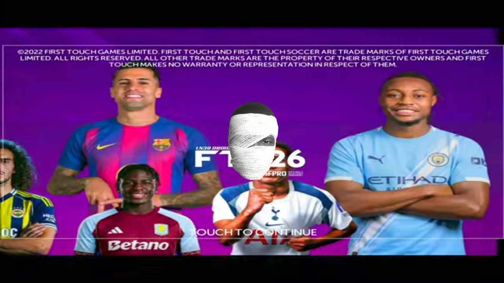
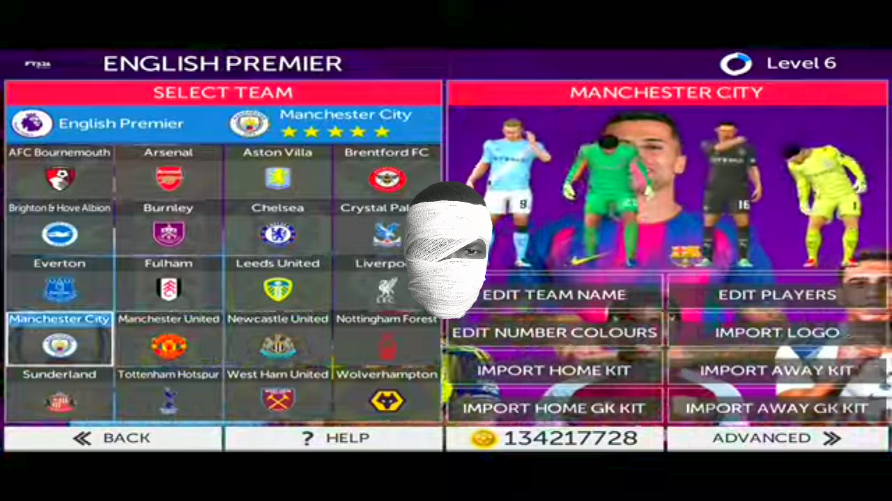
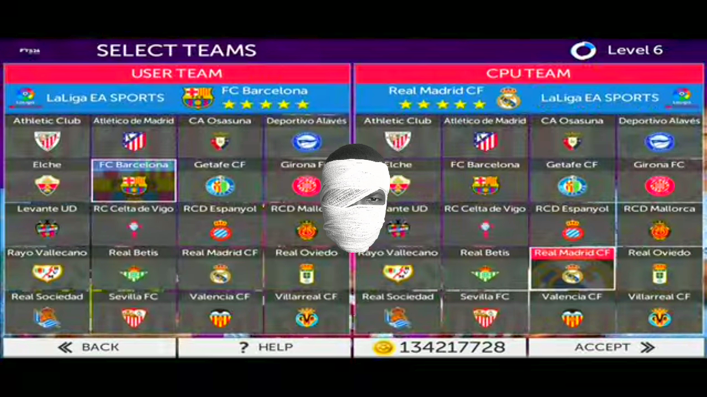
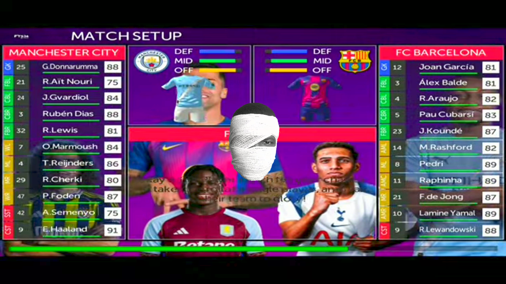
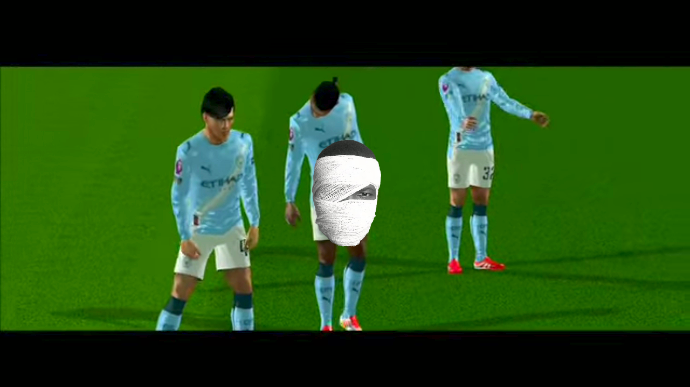
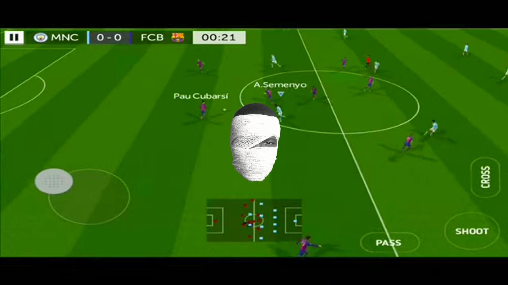
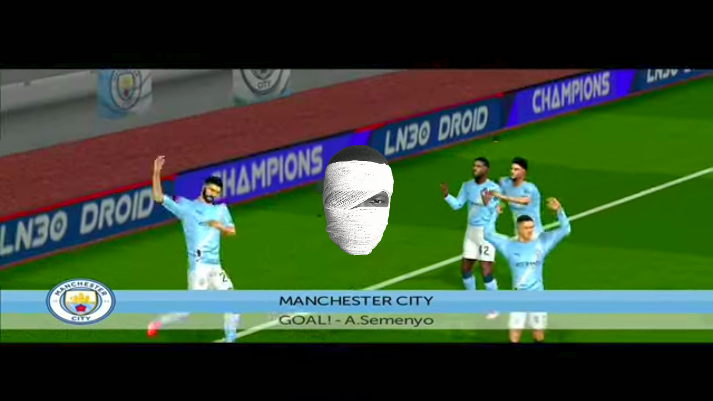

FTS 2026 (First Touch Soccer 2026): A Classic Football Game Reborn
FTS 2026 is a modern revival of the legendary First Touch Soccer series, bringing updated football action to Android devices. Despite being an unofficial continuation, the game remains hugely popular among mobile football fans thanks to its offline gameplay, smooth controls, and classic FTS feel.
Updated Teams and Players
FTS 2026 features latest 2025/26 season squads, including updated transfers, player ratings, and club lineups. Popular leagues and national teams are refreshed to reflect real-world football, giving players a current and competitive experience. Improved Graphics and Animations
The game introduces enhanced HD/4K-style graphics, improved stadiums, realistic pitch textures, and smoother player animations. Goal celebrations, tackles, shots, and goalkeeper saves feel more fluid compared to older FTS versions, making matches more immersive.
Offline Gameplay Experience
One of the biggest strengths of FTS 2026 is that it is fully playable offline. Players can enjoy exhibition matches, tournaments, and career modes without an internet connection, making it perfect for low-data or no-WiFi environments.
Career and Manager ModeFTS 2026 includes a detailed Manager Mode where players can:
Sign and sell players
Manage team finances
Upgrade stadiums
Develop squads over multiple seasons
This mode adds depth and long-term replay value to the game.
Gameplay and Controls
The controls are simple, responsive, and customizable, allowing both casual and competitive players to enjoy the game. Passing, shooting, crossing, and defending feel balanced, while AI difficulty offers a decent challenge, especially in tournaments and cup matches. Customization and Mod Support
     
FTS 2026 supports extensive modding and customization, including:
Custom kits and logosEdited player stats
Updated leagues and competitions
This strong mod community keeps the game fresh long after installation.
Why FTS 2026 Is Still Loved
Lightweight and runs on low-end Android devices
No constant online requirement
Classic arcade-style football gameplay
Regular community updates and patches
Conclusion
FTS 2026 proves that great gameplay never goes out of style. By combining classic First Touch Soccer mechanics with modern updates, the game delivers a satisfying football experience for players who want realism, freedom, and offline fun. Whether you’re a longtime FTS fan or a new player, FTS 2026 remains one of the best offline football games on mobile.
🎮 By : @LN30 DROID